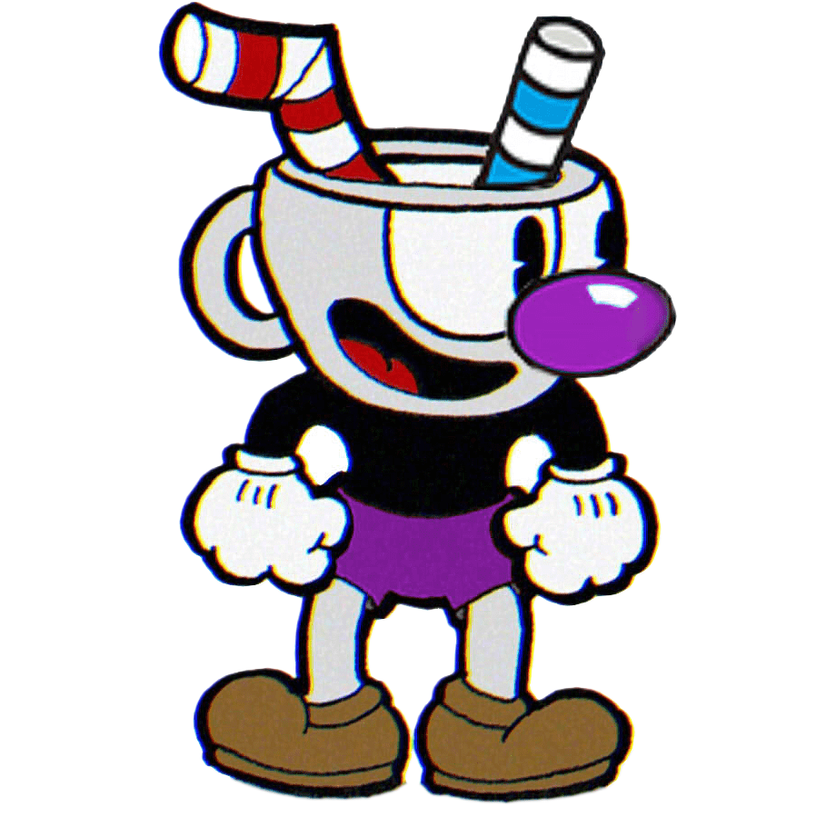

31 - Filters
Defines visual effects (like blur and saturation).
Normal

Blur
Pasa el mouse para quitar el filtro
Brightness
Pasa el mouse para quitar el filtro
Sepia
Pasa el mouse para quitar el filtro
Contrast
Pasa el mouse para quitar el filtro
Invert
Pasa el mouse para quitar el filtro
Saturate
Pasa el mouse para quitar el filtro